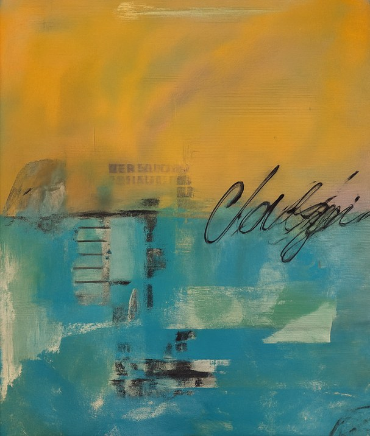
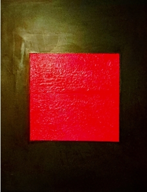
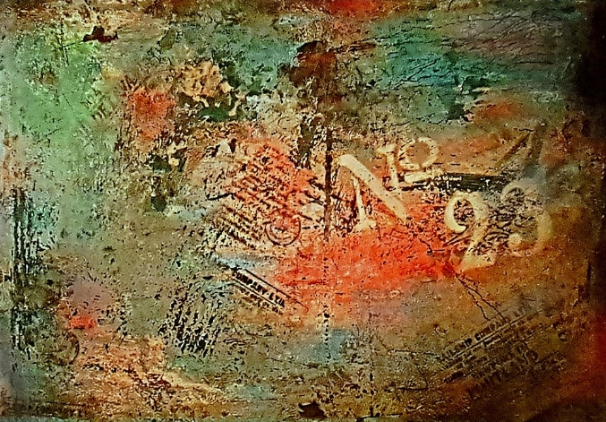
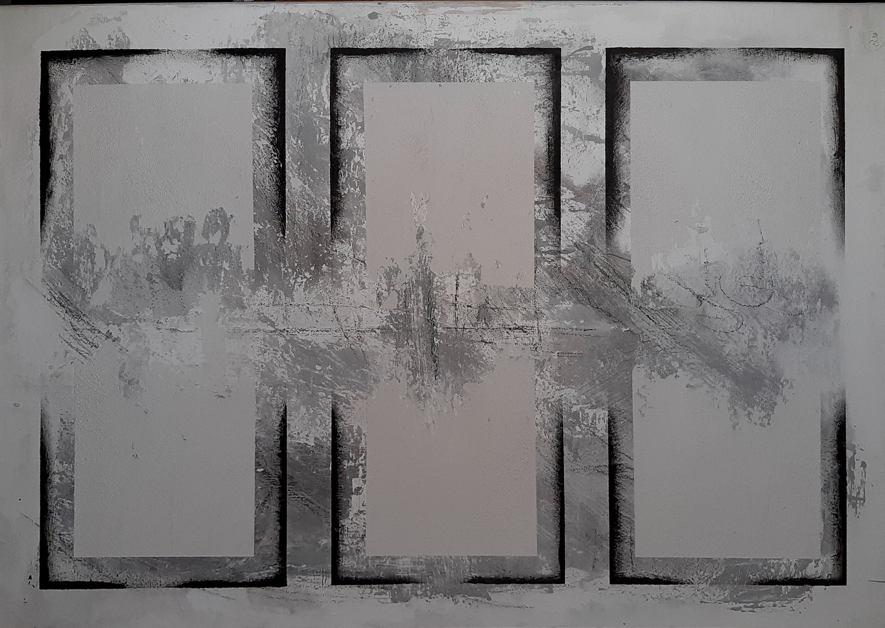
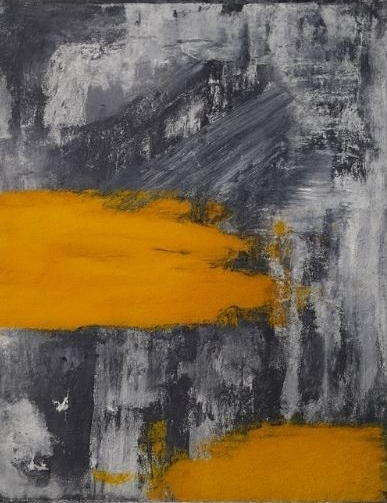
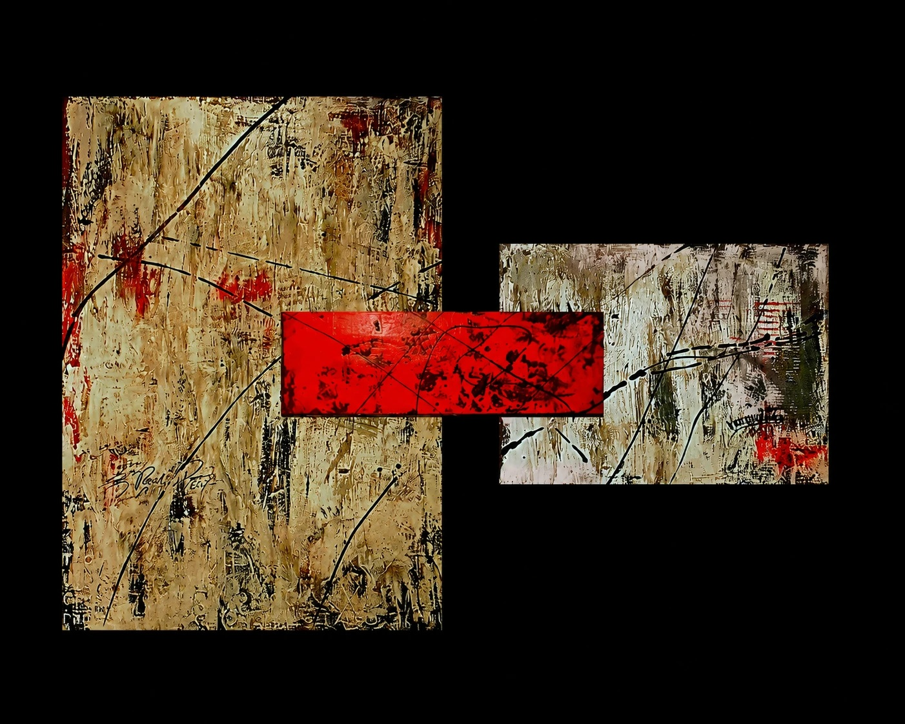
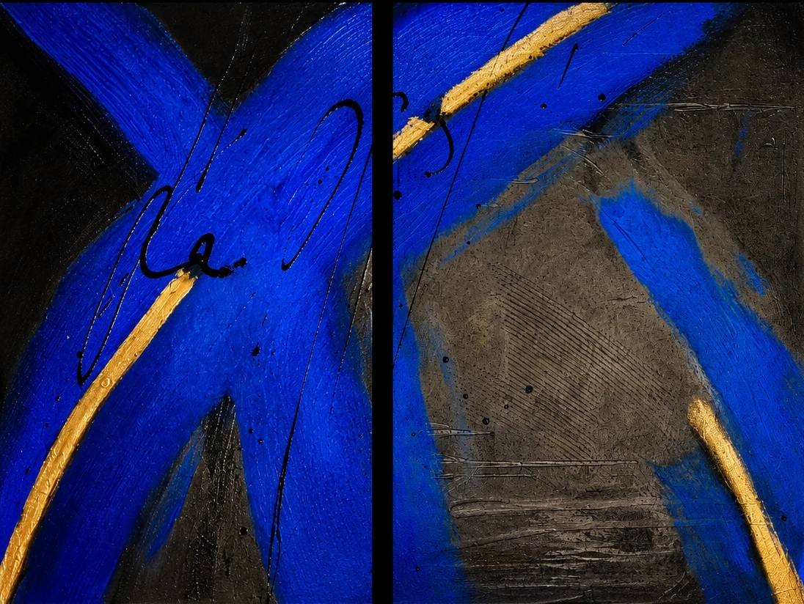
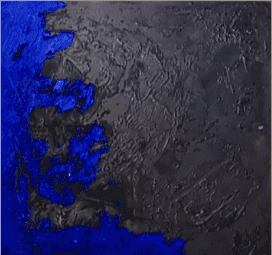
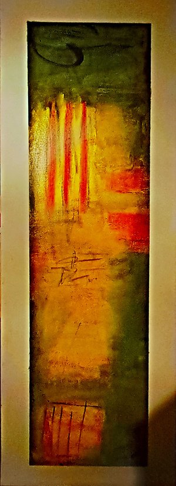

01 / Kunst
- NO. 01 Manuskript ohne Stimme
- NO. 02 Kupferwald
- NO. 03 Feuerstreifen im Schweigen
- NO. 04 Explosion der Leichtigkeit
- NO. 05 Oxidiertes Schweigen
- NO. 06 Zwischen den Schichten
- NO. 07 Unearthed Place
-
NO. 08

Spuren und Wege -
NO. 09

Silent Core -
NO. 10

Spuren in Beton -
NO. 11

Symmetrie der Stille -
NO. 12

Gelbes Echo -
NO. 13

Fragmentierte Einheit -
NO. 14

Linie im Blau -
NO. 15

Unter Strom -
NO. 16

Drei Tore ins Licht - NO. 17 YOU DON'T
- NO. 18 Riss im Rauschen
- NO. 19 Element-Trilogie
- NO. 20 Zu viel Rot
- NO. 21 Resonanz im Beton
- NO. 22 Layers of Being
- NO. 23 Horizont in Flammen
- NO. 24 Farbrebellen
- NO. 25 The End
- NO. 26 Wenn die Stille zittert
- NO. 27 No. 23 – Spuren im Betonlicht
- NO. 28 Feuer im Raster
- NO. 29 Golden Rush